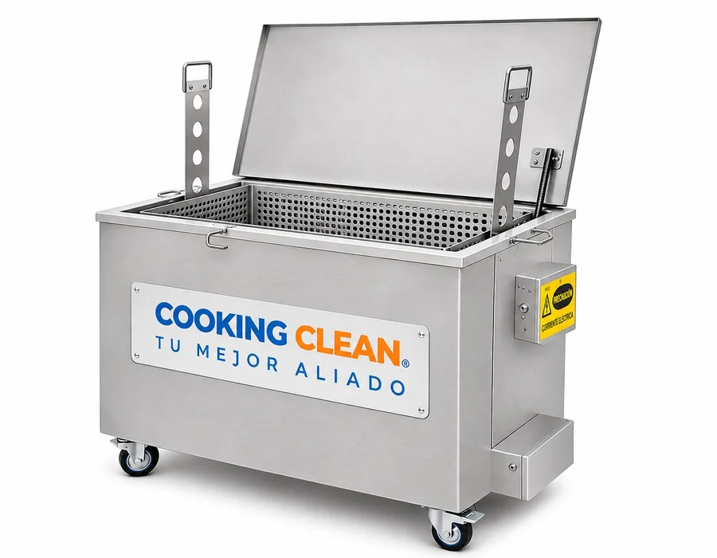
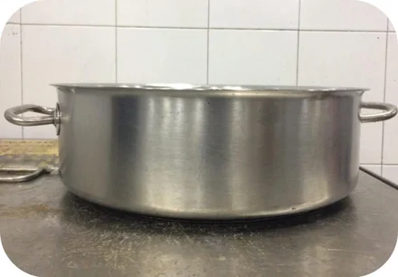
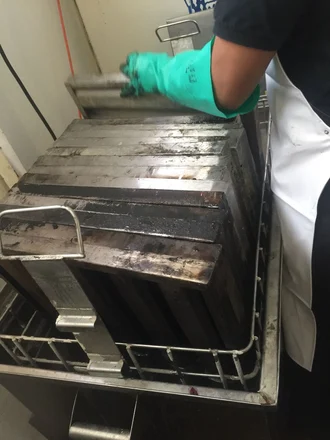

Menos agua e insumos
La limpieza por inmersión ayuda a reducir el consumo de agua, fibras y otros productos de limpieza.
Sistema BIO-3000
Recupera utensilios afectados por grasa, cochambre y carbonización con un sistema de limpieza por inmersión.
El equipo
El equipo de acero inoxidable limpia por inmersión. Usa una fórmula de detergente alcalino diluida en agua a unos 80 °C, compatible con utensilios de aluminio.
Una vez recuperados los utensilios, necesitan menos tiempo de inmersión para su mantenimiento. Eso permite limpiar un mayor volumen de piezas.

Beneficios
La limpieza por inmersión ayuda a reducir el consumo de agua, fibras y otros productos de limpieza.
El proceso evita el rayado por tallado y la fórmula es compatible con utensilios de aluminio.
El servicio en comodato incluye producto, reparaciones, repuestos y mantenimiento. Ofrecemos capacitación continua.
Pruebas de limpieza
Tres ejemplos de recuperación de utensilios con BIO-3000. Los tiempos corresponden a las pruebas de la presentación.

Panadería y pastelería
Cochambre de grasa vegetal.


Hotelería
Grasa animal y vegetal carbonizada.


Cocina industrial
Grasa animal y vegetal carbonizada.
Tu mejor aliado
Conoce lo que BIO-3000 puede hacer por los utensilios de tu cocina.
Visita cookingclean.mx